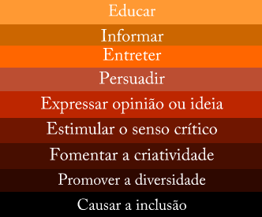

Quais as funções dos livros? Para estimular a imaginação e a criatividade,
importantíssimas não só na infância, mas
durante toda
a vida; Para desenvolver e fortalecer os laços de afetos, seja com as pessoas que já
conhecemos ou
com aquelas que conhecemos por meio dos livros.
Por que tantos vencedores do Nobel de Literatura não tem livros no Brasil?
Os
nomes escolhidos têm sido tão peculiares que se tratam de autores de público quase
sempre
restrito. Se é restrito até no estrangeiro, quer dizer que aqui dificilmente o autor já é
publicado.
A escassez tem a ver também com algumas características do mercado editorial brasileiro.
Quais são as 5 funções da literatura? A literatura é marcada pela combinação
e
seleção das palavras, sua função poética da linguagem.
Existem diversas funções de literatura como a função político-social, catártica, estética,
cognitiva
e lúdica.
